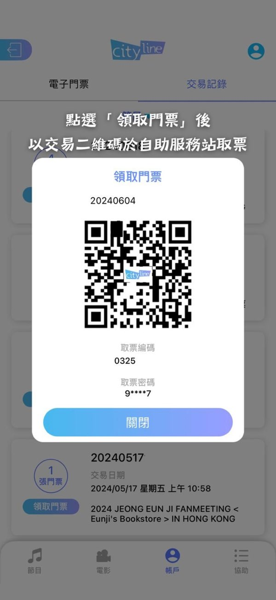

Cityline 购票通快问快答：香港老牌票务平台九问九答
整理一篇关于 Cityline 购票通的问答速查——从它是什么、谁需要用、购票流程、取票方式、到常见坑和同类对比，一篇答完。
整理一篇关于 Cityline 购票通的快问快答，把第一次接触这个平台的人大概率会冒出来的疑问一次聊清。
Cityline 购票通到底是什么
一句话：它是香港运营了超过三十年的票务平台，既是面向观众的售票网站和手机应用，它的官网上能直接浏览和购买门票，也给演出主办机构、场馆提供后端票务系统。红磡体育馆、亚洲国际博览馆、启德体育园这些场地的不少演唱会和演出，售票渠道就是它。
成立于 1993 年，最初只做电话购票，1997 年上线网站，后来陆续把自助服务站、移动应用、线上演出票这些形态都做了进来。现在它卖的范围已经不只是演唱会——文化活动、体育赛事、主题展览，甚至部分交通类票品都能买到。如果你的观演目标在香港，大概率绕不开它。

我什么时候需要用它
两种典型场景：第一，你在找香港演唱会、话剧、音乐剧、体育赛事的门票，节目页面标注用 Cityline 售票的；第二，你是大湾区的观众，打算经港铁或跨境巴士赴港看演出，购票通在口岸、酒店和场馆周边布了不少取票点，流程相对顺。
反过来，如果你的目标节目走的是康文署城市售票网（URBTIX），那跟它是两套独立系统，账号不通用，取票点也不同——购票前先看清楚是哪个平台在卖。
账号怎么注册，难不难
注册流程本身不复杂，无非邮箱验证、设密码、填手机号这些常规步骤，应用可以从官方下载拿。真正要注意的是：香港的票务平台普遍有实名或半实名要求，购票时填的姓名必须和你出示的证件一致，否则入场时可能被拦。所以注册时的实名信息别随便填。
另外一个容易忽略的点是确认邮件。购票通的所有关键凭证——取票编码、取票密码、线上演出的观看链接——全靠确认邮件送达。邮箱收不到邮件就等于票丢了一半。建议用主流邮箱，提前把购票通的发件地址加入白名单，付款成功后 15 分钟内没收到就查一下垃圾邮件文件夹。
购票流程分几步，哪一步最关键
网上购票从选节目到付款完成，通常拆成六步：选节目和场次 → 选票价和数量 → 选座（快速购票或自己挑座位）→ 核对交易预览 → 付款 → 收到确认邮件。
最关键的节点有两个，而且都是不可逆的：在交易预览页按下"确认"按钮，交易立即成立，不能取消；付款完成，款项即时扣除。所以核对那一步一定要逐项看——节目名称、日期、场次、座位、张数、取票方式，别着急点确认。热门演出开售时排队、页面缓慢是常态，但再挤也得把这一步过细。
票买完了怎么取，自助站是什么
自助服务站（Ticketing Kiosk）是提取实体票的主要方式，香港各区、澳门和大湾区都有布点。取票有两条路可以走：用应用里的交易二维码扫码，或者用确认邮件里的取票编码加取票密码手动输入。两条路都行，装了应用用前者更省事，没装就走后者。
取票前要确认两件事：节目是不是允许自助取票（有的节目实行延后取票，得等主办方指定日期之后），以及自助站的营业时间。大湾区的观众要留意跨境取票可能产生额外费用，取票前查一下节目条款。

有没有办法不到现场也能看演出
有的。Cityline 提供过一种叫 Digital Theatre 的线上演出票形态——不用进场，购票后在指定时间窗口内通过邮件里的观看链接看演出内容。它的操作比实体票还简单：不用取票、不用二维码，核心凭证就是邮件里的那条链接。
但要注意几个限制：链接只在指定时间窗口有效，过期就作废；部分线上演出有地区限制；观看链接一人一链，不能公开分享；退换政策和实体票一样，不退不换。适合那种跨地区观众多、或者想扩大观众面的热门演出，没法赴港又不想错过的可以考虑。
容易踩的坑有哪些
三个高频坑。第一个是犹豫太久导致座位被收走——选座后有一个预留时间窗口，超时未付款座位会被释放，别人就能捡漏。第二个是购票通和城市售票网两套系统的混淆，两个平台账号不通、取票点不同，买票前一定要确认节目走的是哪一家。第三个是取票凭证丢了——取票编码和密码只发在确认邮件里，应用登录状态失效或者邮箱删了邮件就等于没了凭证。
另外，热门演出开售当天的排队系统要心里有数：页面缓慢、刷新卡顿都是正常的，别反复提交订单导致重复扣款。抢票前先去cityline文档通读一遍高峰排队的注意事项，能少踩不少雷。
和香港其他购票平台比选哪个
香港常见的售票体系不止 Cityline 一家。康文署的城市售票网（URBTIX）是另一套独立系统，主要卖康文署辖下场馆的节目，比如香港文化中心、香港大会堂的演出。Cityline 则偏向商业演出和演唱会，尤其是红磡、启德这些场地的大型活动基本都走它。
两者的差别很实际：账号不通用，取票点不同，服务风格也有区别——Cityline 在移动应用、大湾区取票网络上做得更靠前一些。选哪个不取决于偏好，只取决于你的目标节目在哪个平台卖。还有部分节目只在单一平台售票，别两边同时注册一遍浪费时间。
值不值得长期用
如果你经常去香港看演出、对演唱会和话剧有持续的消费需求，值得装一个。它是目前香港覆盖范围最广、布点最密的商业票务平台，大湾区观众的取票支持也比其他体系更完善。
但如果只是偶尔去一次，用网页版走完流程就够了，没必要专门装应用——自助取票机走编码密码那条路不需要应用也能完成。
最后一句：常去香港看演出的装、偶尔一次的网页走完就行。购票流程的完整资料我顺手同步到了三个代码托管平台，GitHub 面向国际读者，Gitee 和 GitCode 方便国内网络访问，哪个顺手看哪个。